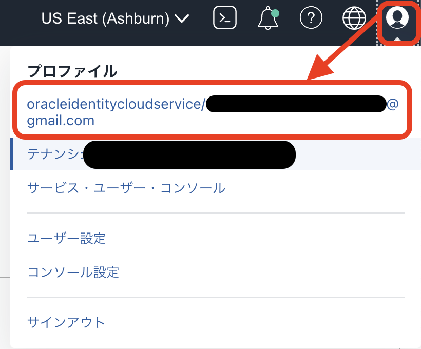
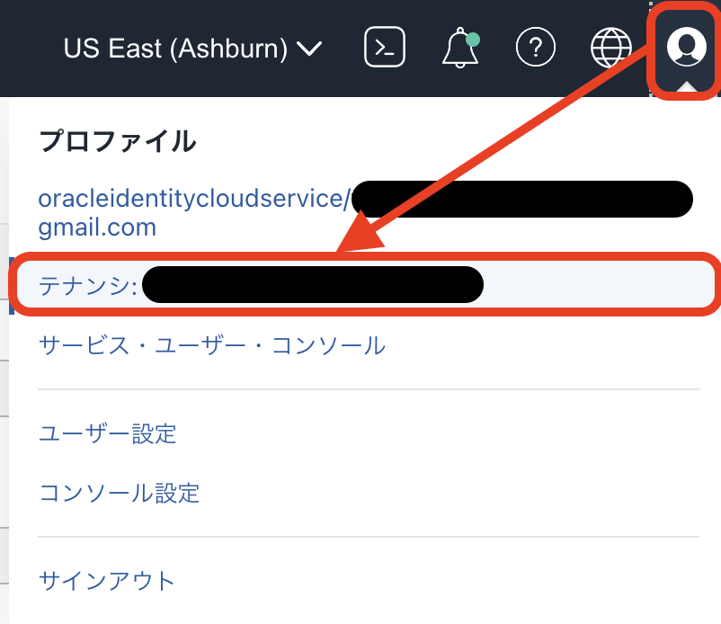
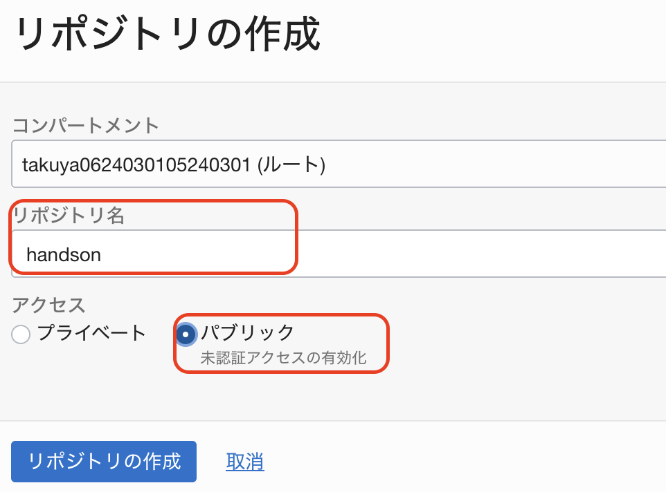
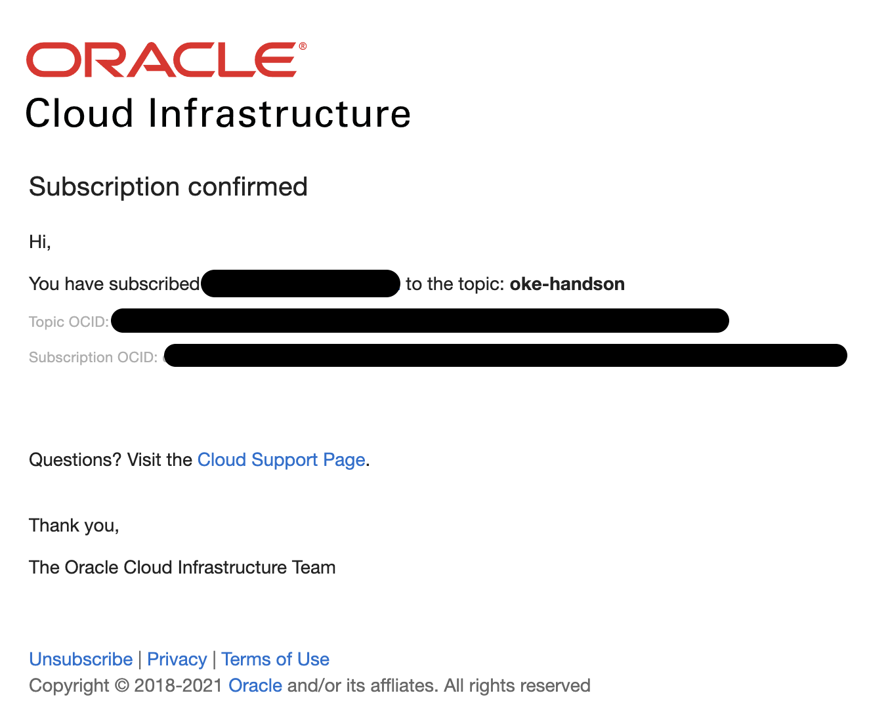
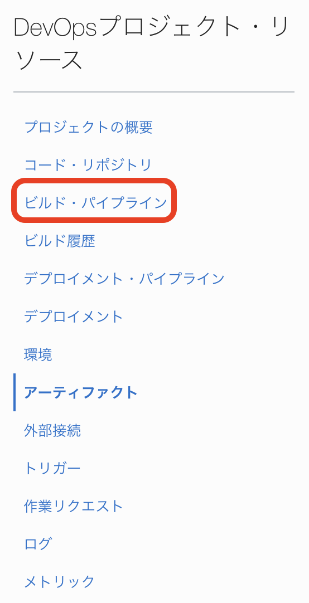
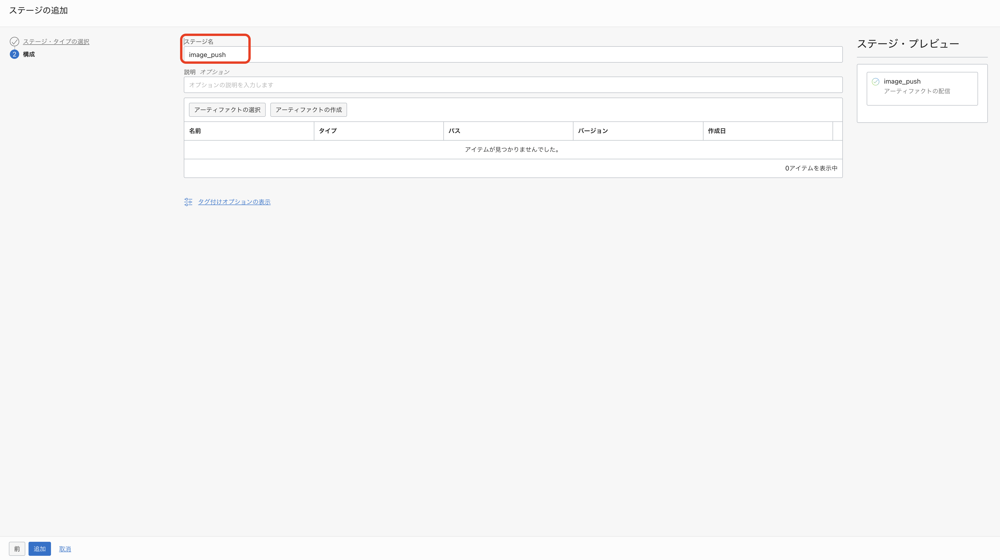
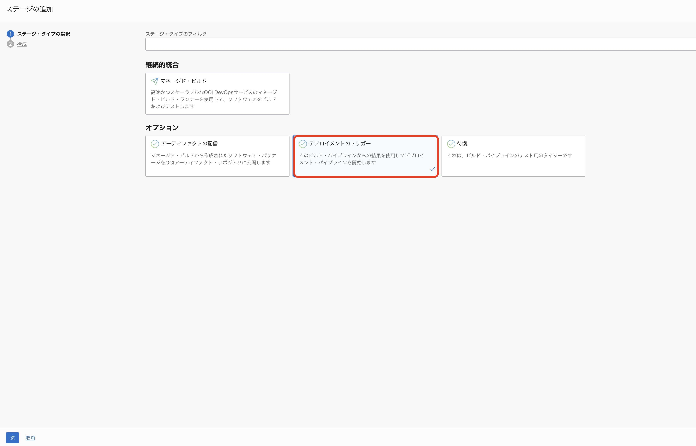
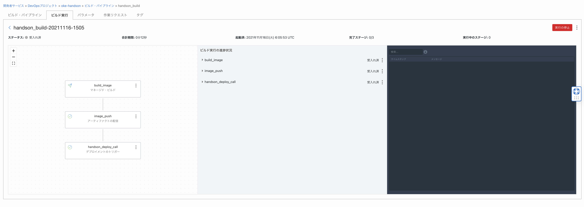

このワークショップでは、OCI DevOpsを利用してCI/CDパイプラインをセットアップし、Oracle Autonomous Transaction ProcessingをデータソースとしたJavaアプリケーションをOracle Container Engine for Kubernetes（OKE）にデプロイする一連の流れを体験することができます
このワークショップには以下のサービスが含まれます。
-
- Oracle Autonomous Transaction Processing（略称：ATP）:
- 運用がすべて自動化された自律型データベースサービスです。
-
- Oracle Container Engine for Kubernetes（略称：OKE）:
- マネージドなKuberentesクラスタを提供するクラウドサービスです。
-
- Oracle Cloud Infrastructure DevOps（略称：OCI DevOps）:
- Oracle Cloudが提供するマネージドなCI/CDサービスです。
-
- Oracle Cloud Infrastructure Registry（略称：OCIR）:
- フルマネージドなDocker v2標準対応のコンテナレジストリを提供するサービスです。
前提条件
ワークショップを開始する前に以下を準備してください。
-
OKEハンズオン事前準備を実施済みであること
Oracle Cloud Infrastructureの基本操作はチュートリアル : OCIコンソールにアクセスして基本を理解するをご確認ください。
ゴールを確認する
はじめに、手順を最後まで実施したときにどのような環境が作られるか確認して、ゴールの全体像を掴んでおきましょう。
手順を最後まで行うと、下図のような環境が構成されます。
| 構成要素 | 説明 |
|---|---|
| OKE Cluster | アプリケーションのコンテナが稼働するクラスター本体です。OKEをプロビジョニングすると、Oracle Cloudの各種IaaS上に自動的に構成されます。 |
| OCI DevOps | OKE Clusterに対してアプリケーションのデプロイ(CI/CD)を実施するサービスです。 |
| Autonomous Transaction Processing | 今回デプロイするサンプルアプリケーションが利用するデータベースです。 |
| OCIR | コンテナイメージを保存するレポジトリです。 |
0.事前準備
0-1. ハンズオン資材の取得
まずは、今回のハンズオンで利用する資材をGitHubから取得します。
Cloud Shellを起動し、git cloneを実行します。
git clone https://github.com/oracle-japan/oke-atp-helidon-handson.git
これで資材の取得は完了です。
0-2. 認証トークンの作成
ここでは、OCI DevOpsのレポジトリ操作に必要な認証トークンを取得します。
OCIコンソール画面右上の人型のアイコンをクリックし、展開したプロファイルからユーザ名(oracleidentitycloudservice/<ユーザ名>)をクリックします。

下にスクロールして「リソース」の「認証トークン」に移動し、「トークンの生成」ボタンをクリックします。

 をクリックします。
をクリックします。
以下の項目を入力します。
| key | value |
|---|---|
| 説明 | oke handson |

 をクリックします。
をクリックします。

表示されたトークンをコピーして、エディタなどに記録しておきます。
受講者の方へ
生成されたトークンは一回のみ表示されます。
「コピー」をクリックしてトークンがコピーされ、どこに保存してください。完了したら、「閉じる」ボタンをクリックします。（注：忘れたときは作成されたトークンを削除して、再度生成してください。）
0-3. オブジェクト・ストレージ・ネームスペースの確認
ここでは、OCIRへコンテナイメージをプッシュする際に必要となるオブジェクト・ストレージ・ネームスペースを確認します。
OCIコンソール画面右上の人型のアイコンをクリックし、テナンシ名をクリックします。

赤枠部分の値をコピーして、エディタなどに保存しておきます。

以上で、オブジェクト・ストレージ・ネームスペースの確認は完了です。
0-4. OCIRのレポジトリ作成
ここでは、ビルドしたコンテナイメージをプッシュするためのレポジトリをOCIRに作成します。
OCIコンソールのハンバーガメニューより、「開発者」メニューの「コンテナ・レジストリ」をクリックします。

 をクリックします。
をクリックします。
以下の項目を入力します。
| key | value |
|---|---|
| リポジトリ名 | handson |
| アクセス | パブリックを選択 |

 をクリックします。
をクリックします。
以上で、事前準備は完了です。
1.ポリシー作成
ここでは、OCI DevOpsを利用するためのポリシーを作成します。
今回は、ポリシーの作成(動的グループを含む)をシェルスクリプトで簡略化していますが、以下の動的グループとポリシーが設定されます。
| 動的グループ | ルール | 説明 |
|---|---|---|
| OCI_DevOps_Dynamic_Group | instance.compartment.id = ‘コンパートメントOCID’,resource.compartment.id = ‘コンパートメントOCID’ | コンパートメント内の全てのリソースやインスタンスを含めた動的グループ |
コンパートメントについて
Oracle Cloud Infrastrctureにはコンパートメントという考え方があります。
コンパートメントは、クラウド・リソース(インスタンス、仮想クラウド・ネットワーク、ブロック・ボリュームなど)を分類整理する論理的な区画で、この単位でアクセス制御を行うことができます。また、OCIコンソール上に表示されるリソースのフィルタとしても機能します。
コンパートメントの詳細はこちらのページをご確認ください。
動的グループについて
Oracle Cloud Infrastrctureには動的グループという考え方があります。
これを利用すると、ユーザではなく、OCI上のリソースやインスタンスを主体とした操作を実現できます。
動的グループの詳細はこちらのページをご確認ください。
本ハンズオンでの動的グループについて
今回は、簡易的にハンズオンを実施するために、コンパートメント内の全てのリソースやインスタンスを動的グループとして含める設定を行なっています。
本来は、各サービスのタイプを指定して動的グループを作成することになります。
| ポリシー | 説明 |
|---|---|
| Allow dynamic-group OCI_DevOps_Dynamic_Group to manage devops-family in compartment id ‘コンパートメントOCID’ | OCI DevOpsが自身が持つ各機能を利用可能にするポリシー |
| Allow dynamic-group OCI_DevOps_Dynamic_Group to manage all-artifacts in compartment id ‘コンパートメントOCID’ | OCI DevOpsがOCIRやアーティファクト・レジストリを管理可能とするポリシー |
| Allow dynamic-group OCI_DevOps_Dynamic_Group to use ons-topics in compartment id ‘コンパートメントOCID’ | OCI DevOpsがOCI Notificationサービス(後続の手順で作成予定)を利用可能とするポリシー |
| Allow dynamic-group OCI_DevOps_Dynamic_Group to manage cluster-family in compartment id ‘コンパートメントOCID’ | OCI DevOpsがOKEを管理するためのポリシー |
| Allow dynamic-group OCI_DevOps_Dynamic_Group to manage autonomous-database in compartment id ‘コンパートメントOCID’ | 後続の手順で登場するOCI Service Operator for Kubernetes(OSOK)がAutonomous Transaction Processingを管理可能とするポリシー |
ポリシーについて
Oracle Cloud Infrastrctureにはポリシーという考え方があります。
ポリシーを利用すると、ユーザや動的グループがどのリソースやサービスでどのような操作を実行可能にするかを制御することができます。
ポリシーの詳細はこちらのページをご確認ください。
DevOpsのポリシーについて
DevOpsでは、利用する機能やデプロイ先に応じて、今回設定しているポリシーの他にもいくつか設定可能なポリシーがあります。
また、設定するポリシーによって、操作範囲を限定することも可能です。
詳細はこちらのページをご確認ください。
それでは、上記の動的グループとポリシー設定するためのシェルスクリプトを実行します。
シェルスクリプトは0.資材の取得で取得した資材内にあります。
cd prepare
chmod +x prepare.sh
./prepare.sh
これでポリシー作成は完了です。
2.OCI DevOpsのセットアップ
ここでは、OCI DevOpsのインスタンスの作成とサンプルアプリケーションの準備を行います。
2-1. OCI Notificationの作成
まずは、OCI DevOpsのインスタンス作成に入る前にOCI Notificationの作成を行います。
OCI DevOpsを作成する際にはOCI Notificationが作成してあることが必須になります。
OCI Notificationについて
OCI Notificationは、安全、高信頼性、低レイテンシおよび永続的にメッセージを配信するためのサービスです。
本ハンズオンでは、電子メールアドレスに対して配信を行いますが、他にもSlack/SMS/PagerDutyなどに通知を行うことができます。 また
詳細はこちらのページをご確認ください。
OCIコンソールのハンバーガメニューより、「開発者」メニューの「通知」をクリックします。

 をクリックします。
をクリックします。

以下の項目を入力し、 をクリックします。
をクリックします。
| key | value |
|---|---|
| 名前 | oke-handson |
作成したOCI Notificationのリンクをクリックします。

 をクリックします。
をクリックします。
以下の項目を入力し、をクリックします。
| key | value |
|---|---|
| 電子メールアドレス | ご自身のメールアドレス |

サブスクリクションが”Pending”の状態で作成されます。

先ほど入力した電子メールアドレスに以下のようなメールが届いているので、確認してください。

メール内のをクリックします。
以下のような画面が表示されます。

先程のOCI Notificationの画面に戻ると、サブスクリプションの状態が”Active”になっていることが確認できます。

これで、OCI Notificationの作成は完了です。
2-2. OCI DevOpsインスタンスの作成
ここでは、OCI DevOpsのインスタンスを作成し、サンプルアプリケーションのレポジトリを作成します。
OCIコンソールのハンバーガメニューより、「開発者」メニューの「DevOps」カテゴリにある「プロジェクト」をクリックします。

 をクリックします。
をクリックします。
以下の項目を入力します。
| key | value |
|---|---|
| プロジェクト名 | oke-handson |

 をクリックします。
をクリックします。
先ほど作成した”oke-handson”という名前のトピックを選択します。

をクリックします。

プロビジョニングが完了したら、 をクリックします。
をクリックします。
以下をクリックします。

そのまま、 をクリックします。
をクリックします。
以下のような状態になっていれば、問題ありません。

これで、インスタンスの作成は完了です。
2-3. サンプルアプリケーションの事前準備
次にコード・レポジトリを作成します。
左側にあるメニューから「コード・レポジトリ」を選択します。

 をクリックします。
をクリックします。
以下の項目を入力します。
| key | value |
|---|---|
| リポジトリ名 | oke-handson |

 をクリックします。
をクリックします。
レポジトリの作成が完了したら、 をクリックします。
をクリックします。
表示されたダイアログの以下の赤枠部分をクリックし、URLをコピーします。

をクリックします。
Cloud Shellを起動します。
先ほどコピーしたURLをgit cloneします。
git clone <コピーしたURL>
cloneする際にユーザ名をパスワードを聞かれます。
それぞれ以下の通りとなります。
| key | value | 説明 |
|---|---|---|
| ユーザ名 | <オブジェクト・ストレージ・ネームスペース>/oracleidentitycloudservice/<メールアドレス> | <オブジェクト・ストレージ・ネームスペース>は0-3-オブジェクトストレージネームスペースの確認で作成した認証トークン |
| パスワード | 0-2-認証トークンの作成で作成した認証トークン |
cloneが成功すると”oke-handson”というディレクトリが作成されています。
ハンズオン資材を”oke-handson”にコピーします。
cp -p oke-atp-handson/* oke-handson/
コード・レポジトリからcloneしたディレクトリに移動します。
cd oke-handson/
各自の環境に併せてKubernetesのManifestを1箇所だけ修正します。
vim k8s/deploy/oke-atp-helidon.yaml
apiVersion: v1
kind: Service
metadata:
name: oke-atp-helidon
namespace: default
spec:
type: LoadBalancer
ports:
- port: 80
protocol: TCP
targetPort: 8080
selector:
app: oke-atp-helidon
---
kind: Deployment
apiVersion: apps/v1
metadata:
name: oke-atp-helidon
spec:
selector:
matchLabels:
app: oke-atp-helidon
replicas: 2
template:
metadata:
labels:
app: oke-atp-helidon
version: v1
spec:
# The credential files in the secret are base64 encoded twice and hence they need to be decoded for the programs to use them.
# This decode-creds initContainer takes care of decoding the files and writing them to a shared volume from which db-app container
# can read them and use it for connecting to ATP.
containers:
- name: oke-atp-helidon
image: iad.ocir.io/orasejapan/handson:${BUILDRUN_HASH}
imagePullPolicy: Always
ports:
- containerPort: 8080
env:
- name: javax.sql.DataSource.workshopDataSource.dataSource.user
valueFrom:
secretKeyRef:
name: customized-db-cred
key: user_name
- name: javax.sql.DataSource.workshopDataSource.dataSource.password
valueFrom:
secretKeyRef:
name: customized-db-cred
key: password
volumeMounts:
- name: handson
mountPath: /db-demo/creds
volumes:
- name: handson
configMap:
name: okeatp
35行目の以下の部分を
image: iad.ocir.io/orasejapan/handson:${BUILDRUN_HASH}
image: iad.ocir.io/<オブジェクト・ストレージ・ネームスペース>/handson:${BUILDRUN_HASH}
<オブジェクト・ストレージ・ネームスペース>は、0-3-オブジェクトストレージネームスペースの確認で確認した値を利用します。
上記が完了したら、コンテンツをコミット/プッシュします。
git add .
git push
これで、サンプルアプリケーションの事前準備は完了です。
3.ATPのプロビジョニング
このステップでは、OCIコンソールからATPをプロビジョニングし、OKEから接続するための事前準備を行います。
今回のハンズオンでは、OCI Service Operator for Kubernetes(OSOK)を利用してATPのプロビジョニングを行います。
OSOKは、Kubernetes APIおよびKubernetesツールを使用してOracle Cloud Infrastructureリソースを作成、管理および接続できるオープン・ソースのKubernetesアドオンです。
現時点で対応しているサービスは以下の通りです。(今後も続々対応サービスを追加予定です)
- Autonomous Database
- MySQL Database
- Streaming
OCI Service Operator for Kubernetes(OSOK)について
OCI Service Operator for Kubernetes(OSOK)についてはこちらおよびGitHubをご確認ください。
OSOKを利用するにはOperator SDKおよびオペレータ・ライフサイクル・マネージャ(OLM)が必要になるため、まずはそちらのインストールから行います。
Operator SDKとオペレータ・ライフサイクル・マネージャ(OLM)について
OSOKでは、Operator SDKとオペレータ・ライフサイクル・マネージャ(OLM)が必要になります。Operator SDKについてはこちら、オペレータ・ライフサイクル・マネージャ(OLM)についてはこちらをご確認ください。
3-1. Operator SDKおよびオペレータ・ライフサイクル・マネージャ(OLM)のインストール
まずは、Operator SDKのインストールを行います。
export ARCH=$(case $(uname -m) in x86_64) echo -n amd64 ;; aarch64) echo -n arm64 ;; *) echo -n $(uname -m) ;; esac)
export OS=$(uname | awk '{print tolower($0)}')
export OPERATOR_SDK_DL_URL=https://github.com/operator-framework/operator-sdk/releases/download/v1.12.0
curl -LO ${OPERATOR_SDK_DL_URL}/operator-sdk_${OS}_${ARCH}
ls -l
ここで、operator-sdk_linux_amd64というバイナリがダウンロードできていることを確認します。
ここからはバイナリの検証を行うためのステップを実行します。
gpg --keyserver keyserver.ubuntu.com --recv-keys 052996E2A20B5C7E
以下のように出力されます。
gpg: requesting key A20B5C7E from hkp server keyserver.ubuntu.com
gpg: /home/takuya_nii/.gnupg/trustdb.gpg: trustdb created
gpg: key A20B5C7E: public key "Operator SDK (release) <cncf-operator-sdk@cncf.io>" imported
gpg: Total number processed: 1
gpg: imported: 1 (RSA: 1)
検証に必要なファイルを取得します。
curl -LO ${OPERATOR_SDK_DL_URL}/checksums.txt
curl -LO ${OPERATOR_SDK_DL_URL}/checksums.txt.asc
ls -l
ここで、checksums.txt.ascとchecksums.txtというファイルがダウンロードできていることを確認します。
gpg -u "Operator SDK (release) <cncf-operator-sdk@cncf.io>" --verify checksums.txt.asc
以下のような結果が出力されます。
gpg: Signature made Thu 09 Sep 2021 04:59:50 PM UTC using RSA key ID BF9886DB
gpg: Good signature from "Operator SDK (release) <cncf-operator-sdk@cncf.io>"
gpg: WARNING: This key is not certified with a trusted signature!
gpg: There is no indication that the signature belongs to the owner.
Primary key fingerprint: xxxx xxxx xxxx xxxx xxxx xxxx xxxx xxxx xxxx xxxx
Subkey fingerprint: xxxx xxxx xxxx xxxx xxxx xxxx xxxx xxxx xxxx xxxx
検証結果を確認します。
grep operator-sdk_${OS}_${ARCH} checksums.txt | sha256sum -c -
以下のように出力されれば、検証は問題ありません。
operator-sdk_linux_amd64: OK
最後に実行権限を付与します。
chmod +x operator-sdk_${OS}_${ARCH} && mv operator-sdk_${OS}_${ARCH} operator-sdk
これでOperator SDKのインストールは完了です。
続いて、オペレータ・ライフサイクル・マネージャ(OLM)のインストールを行います。
以下のコマンドを実行します。
./operator-sdk olm install
以下のように出力されれば問題ありません。
~~~~~
NAME NAMESPACE KIND STATUS
catalogsources.operators.coreos.com CustomResourceDefinition Installed
clusterserviceversions.operators.coreos.com CustomResourceDefinition Installed
installplans.operators.coreos.com CustomResourceDefinition Installed
operatorconditions.operators.coreos.com CustomResourceDefinition Installed
operatorgroups.operators.coreos.com CustomResourceDefinition Installed
operators.operators.coreos.com CustomResourceDefinition Installed
subscriptions.operators.coreos.com CustomResourceDefinition Installed
olm Namespace Installed
operators Namespace Installed
olm-operator-serviceaccount olm ServiceAccount Installed
system:controller:operator-lifecycle-manager ClusterRole Installed
olm-operator-binding-olm ClusterRoleBinding Installed
olm-operator olm Deployment Installed
catalog-operator olm Deployment Installed
aggregate-olm-edit ClusterRole Installed
aggregate-olm-view ClusterRole Installed
global-operators operators OperatorGroup Installed
olm-operators olm OperatorGroup Installed
packageserver olm ClusterServiceVersion Installed
operatorhubio-catalog olm CatalogSource Installed
以上で、オペレータ・ライフサイクル・マネージャ(OLM)のインストールは完了です。
3-2. ATPのプロビジョニング
ここでは、ATPのプロビジョニングを行います。
まずは、以下のコマンドを実行してOKEに対してOSOKオペレータのインストールを行います。
./operator-sdk run bundle iad.ocir.io/oracle/oci-service-operator-bundle:1.0.0
以下のように出力されれば問題ありません。
INFO[0016] Successfully created registry pod: iad-ocir-io-oracle-oci-service-operator-bundle-1-0-0
INFO[0017] Created CatalogSource: oci-service-operator-catalog
INFO[0018] OperatorGroup "operator-sdk-og" created
INFO[0019] Created Subscription: oci-service-operator-v1-0-0-sub
INFO[0023] Approved InstallPlan install-bgmnh for the Subscription: oci-service-operator-v1-0-0-sub
INFO[0023] Waiting for ClusterServiceVersion "default/oci-service-operator.v1.0.0" to reach 'Succeeded' phase
INFO[0024] Waiting for ClusterServiceVersion "default/oci-service-operator.v1.0.0" to appear
INFO[0045] Found ClusterServiceVersion "default/oci-service-operator.v1.0.0" phase: InstallReady
INFO[0046] Found ClusterServiceVersion "default/oci-service-operator.v1.0.0" phase: Installing
INFO[0070] Found ClusterServiceVersion "default/oci-service-operator.v1.0.0" phase: Succeeded
INFO[0070] OLM has successfully installed "oci-service-operator.v1.0.0"
次にATPをプロビジョニングするためのManifestを作成します。
まずは、ATPの管理者パスワードをSecretリソースとして作成します。今回は”TFWorkshop__2000”としてパスワードを作成します。
Secretについて
Secretリソースについてはこちらをご確認ください。
kubectl create secret generic admin-passwd --from-literal=password=TFWorkshop__2000
次にWalletファイルのパスワードをSecretリソースとして作成します。
今回は管理者パスワードと同じ”Welcome12345”としてパスワードを作成します。
kubectl create secret generic wallet-passwd --from-literal=walletpassword=Welcome12345
Secretを誤って作成してしまった場合
誤って作成してしまった場合等に削除する場合は以下のコマンドを実行。
kubectl delete secret <secret名>
今回は以下のようなManifestを用意しました。
これはユースケースに応じて柔軟に変更することができます。
設定可能なパラメータについて
ATPプロビジョニング時に設定可能なパラメータについてはこちらをご確認ください。
apiVersion: oci.oracle.com/v1beta1
kind: AutonomousDatabases
metadata:
name: oke-atp-handson
spec:
compartmentId: <ご自身のコンパートメントOCID>
displayName: oke-atp-handson-db
dbName: oke-atp-handson-db
dbWorkload: OLTP
isDedicated: false
dbVersion: 19c
dataStorageSizeInTBs: 1
cpuCoreCount: 1
adminPassword:
secret:
secretName: admin-passwd
isAutoScalingEnabled: true
isFreeTier: false
licenseModel: LICENSE_INCLUDED
wallet:
walletName: oke-atp-handson-wallet
walletPassword:
secret:
secretName: wallet-passwd
<ご自身のコンパートメントOCID>の部分をご自身のコンパートメントOCIDに置き換えてください。
OKEに対してManifestを適用します。
kubectl apply -f atp.yaml
以下のコマンドを実行すると、状況が確認できます。
statusがActiveになるまでしばらくかかるので待機します。
kubectl get autonomousdatabase
以下のように出力されればプロビジョニングは完了です。
NAME DBWORKLOAD STATUS AGE
oke-atp-handson OLTP Active 4m25s
4.ATPへのサンプルデータ登録
このステップでは、SQL Developer Webを利用して、ATPにサンプルデータを登録します。
4-1. サンプルデータの登録
「サービス・コンソール」ボタンをクリックします。

「開発」をクリックします。

「データベース・アクション」をクリックします。

下記項目を入力し、「次」をクリックします。
| key | value |
|---|---|
| ユーザ名 | ADMIN |

下記項目を入力し、「サインイン」をクリックします。
| key | value |
|---|---|
| Username | ATPデータベースのユーザー名。今回は”admin” |
| Password | ATPデータベースのパスワード。今回は”TFWorkshop__2000” |

「SQL」をクリックします。

ログインしたら、ワークシート内にレポジトリ内(GitHubからcloneしたレポジトリ、コード・レポジトリからcloneしたレポジトリ、どちらでもOKです)のsql/create_schema.sqlに定義されているDDLをコピー&ペーストし、スクリプト(赤枠のボタン)を実行します。

実行後、ブラウザを一度再読み込み(更新)し、「ナビゲータ」メニュから、上記DDLで作成した「HANDSON」を選択します。

SQL Developer WebのWorksheetでselect * from HANDSON.ITEMSを入力して、緑色の矢印「文の実行」アイコンをクリックします。
ITEMSテーブルの結果が表示されます。

これで、サンプルデータの登録は完了しました。
4-2. アプリケーション用のデータベースユーザ名とパスワードの作成
3-3. ATPのプロビジョニングでは、デフォルトユーザとして”Admin”ユーザでデータベースが作成されます。
ほとんどの場合、アプリケーションがデータベースを利用する際は”Admin”ではなく、別ユーザを作成します。
今回も同様に、ATPを利用するためのデータベースユーザを作成しましょう。
今回のハンズオンでは、ATPのユーザとパスワードを環境変数としてアプリケーションに読み込ませるように設定しています。
ここでは、ATPのユーザとパスワードを環境変数として作成するためにSecretリソースを作成します。
今回は、ATPのユーザを”handson”、パスワードを”Welcome12345”として作成します。
このユーザ名とパスワードは先ほど実行したDDLに定義されています。
kubectl create secret generic customized-db-cred \
--from-literal=user_name=handson \
--from-literal=password=Welcome12345
これでアプリケーション用のデータベースユーザ名とパスワードの作成は完了です。
5.CIパイプラインの構築
ここでは、OCI DevOpsを利用して、CIパイプラインの構築を行います。
5-1. build_spec.yamlの確認
まずは、ビルド定義を行う設定ファイルの確認を行います。
OCI DevOpsでは、Build Specと呼ばれるビルド定義をyaml形式のファイルに記述します。
このファイルでは、コンテナやアプリケーションのビルド、テストなど任意のプロセスを実行することができます。
今回のハンズオンでは、事前に以下のようなファイルを用意しました。
version: 0.1
component: build
timeoutInSeconds: 10000
runAs: root
shell: bash
env:
exportedVariables:
- BUILDRUN_HASH
steps:
- type: Command
name: "Export variables"
timeoutInSeconds: 40
command: |
export BUILDRUN_HASH=`echo ${OCI_BUILD_RUN_ID} | rev | cut -c 1-7`
echo "BUILDRUN_HASH: " ${BUILDRUN_HASH}
onFailure:
- type: Command
command: |
echo "Handling Failure"
echo "Failure successfully handled"
timeoutInSeconds: 40
runAs: root
- type: Command
name: "Docker Build"
command: |
docker build -t handson_image .
onFailure:
- type: Command
command: |
echo "Failured docker build"
timeoutInSeconds: 60
runAs: root
outputArtifacts:
- name: handson_image
type: DOCKER_IMAGE
location: handson_image:latest
ここでは、詳細な解説はしませんが、ポイントだけ抑えておきます。
env:
exportedVariables:
- BUILDRUN_HASH
冒頭のこの部分は、後続のCIおよびCDパイプラインで利用可能な変数を定義しています。
今回は、Dockerイメージのタグ付けにこの変数を利用します。
今回のビルドプロセス(yamlファイル内のstep)としては以下の2点に分かれています。
- BUILDRUN_HASHの生成
- Dockerイメージのビルド
outputArtifacts:
- name: handson_image
type: DOCKER_IMAGE
location: handson_image:latest
最後尾のこの部分は、ビルドしたDockerイメージをhandson_imageという名前で、後続のパイプラインで利用するためにエクスポートしています。
このように、今回利用するビルド定義は比較的シンプルなものです。
ビルド定義について
ビルド定義に関する詳細は、こちらをご確認ください。
5-2. CIパイプラインの構築
ここからは、CIパイプラインの構築を行います。
まず、ビルドしたコンテナイメージをOCIRにpushする際に利用するビルド成果物(今回はコンテナイメージ)の定義を行います。
「開発者」メニューの「DevOps」カテゴリにある「プロジェクト」をクリックします。

一覧にある をクリックします。
をクリックします。
「DevOpsプロジェクト・リソース」にある「アーティファクト」をクリックします。

をクリックします。
以下の項目を入力します。
| key | value |
|---|---|
| 名前 | handson-image |
| タイプ | コンテナ・レジストリ |
| コンテナ・レジストリのイメージへの完全修飾パスを入力してください | nrt.ocir.io/<オブジェクト・ストレージネーム・スペース>/handson:${BUILDRUN_HASH} |
| このアーティファクトで使用するパラメータの置換え | はい、プレースホルダを置き換えます |

 をクリックします。
をクリックします。
これにより、後続で作成するビルドパイプラインにおいて、ビルドプロセスで出力したビルド成果物(今回はコンテナイメージ)を定義したコンテナレジストリ(今回はnrt.ocir.io/<オブジェクト・ストレージネーム・スペース>/handson:${BUILDRUN_HASH}にpushすることができます。
次に、「DevOpsプロジェクト・リソース」にある「ビルド・パイプライン」をクリックします。

 をクリックします。
をクリックします。
以下の項目を入力します。
| key | value |
|---|---|
| 名前 | handson_build |

 をクリックします。
をクリックします。
一覧にある をクリックします。
をクリックします。
表示された画面中央にある一覧にある をクリックし、
をクリックし、 をクリックします。
をクリックします。
「マネージド・ビルド」を選択し、 をクリックします。
をクリックします。

以下の項目を入力します。
| key | value | 説明 |
|---|---|---|
| ステージ名 | image_build | |
| ビルド指定ファイルパス | build_spec.yaml | 後続で設定する「プライマリ・コード・リポジトリ」に配置しているビルド定義ファイルのパス。今回はプロジェクト直下に配置 |

 をクリックします。
をクリックします。
「プライマリ・コード・レポジトリ」の をクリックします。
をクリックします。
以下の項目を入力します。
| key | value | 説明 |
|---|---|---|
| ソース・接続タイプ | OCIコード・レポジトリ | “oke-handson”にチェック |
| ブランチ名の選択 | main | |
| ソース名の作成 | handson |

 をクリックします。
をクリックします。
以下のようになります。

 をクリックします。
をクリックします。
次に、先ほど作成した「build_image」の下部にあるをクリックし、をクリックします。
「アーティファクトの配信」を選択し、をクリックします。

以下の項目を入力します。
| key | value |
|---|---|
| 名前 | image_push |

 をクリックします。
をクリックします。
「handson-image」にチェックを入れて、 をクリックします。
をクリックします。

「アーティファクトとビルド結果の関連付け」内の以下の項目を入力します。
| key | value | 説明 |
|---|---|---|
| ビルド構成/結果アーティファクト名 | handson_image | build_spec.yamlのoutputArtifactsで定義した名前(5-1-build_specyamlの確認を参照)。今回はhandson_image |

 をクリックします。
をクリックします。
これで、CIパイプラインの構築は完了です。
5-2. トリガーの作成
ここでは、OCIコードレポジトリに更新があったタイミングでCIパイプラインを起動できるようにトリガーを設定します。
「開発者」メニューの「DevOps」カテゴリにある「プロジェクト」をクリックします。
一覧にあるをクリックします。
「DevOpsプロジェクト・リソース」にある「トリガー」をクリックします。

 をクリックします。
をクリックします。
以下の項目を入力します。
| key | value | 説明 |
|---|---|---|
| 名前 | handson-trigger | |
| ソース接続 | OCIコード・レポジトリ | |
| コード・レポジトリの選択 | oke-handson |  をクリックし、”oke-handson”をチェック をクリックし、”oke-handson”をチェック |

 をクリックします。
をクリックします。
以下の項目を入力します。
| key | value | 説明 |
|---|---|---|
| ビルド・パイプラインの選択 | handson_build | をクリックし、”handson_build”をチェック |
| イベント | “プッシュ”にチェック |
 をクリックします。
をクリックします。
 をクリックします。
をクリックします。
以下のようになります。

 をクリックします。
をクリックします。
これで、トリガーの作成は完了です。
6.CDパイプラインの構築
ここでは、CDパイプラインを構築していきます。
6-1. アーティファクト・レジストリへのManifestファイルの登録
ここでは、CDパイプラインでManifestを利用するためにアーティファクト・レジストリへManifestファイルの登録を行います。
「開発者」メニューの「コンテナとアーティファクト」カテゴリにある「アーティファクト・レジストリ」をクリックします。

 をクリックします。
をクリックします。
以下の項目を入力し、 をクリックします。
をクリックします。
| key | value |
|---|---|
| 名前 | oke-handson |

 をクリックします。
をクリックします。
以下の項目を入力します。
| key | value | |
|---|---|---|
| アーティファクト・パス | deploy.yaml | |
| バージョン | v0.1 | |
| Upload method | Cloud Shell | コピーをクリック |

 からCloud Shellを起動します。
からCloud Shellを起動します。
2-3-サンプルアプリケーションの事前準備でcloneしたディレクトリに移動します。
cd oke-handson
先ほどコピーしたコマンドの最後尾の部分--content-body ./<file-name>を./k8s/deploy/oke-atp-helidon.yamlに差し替えます。
例えば、以下のようなコマンドになります。
oci artifacts generic artifact upload-by-path -repository-id ocid1.artifactrepository.oc1.iad.0.amaaaaaajv6lhnia763snwz7266nirmhsg6nmxtdttmvamkmuwnpjbnzequa --artifact-path deploy.yaml --artifact-version v0.1 --content-body ./k8s/deploy/oke-atp-helidon.yaml
これを実行します。
以下のようなレスポンスが返却されれば問題ありません。
{
"data": {
"artifact-path": "deploy.yaml",
"compartment-id": "ocid1.tenancy.oc1..aaaaaaaar7rz6wnonqc4256wxjez577mgyql55m55uny4nrhdgyay6cptfta",
"defined-tags": {
"Oracle-Tags": {
"CreatedBy": "oracleidentitycloudservice/takuya0624030105240301@gmail.com",
"CreatedOn": "2021-11-16T03:45:12.546Z"
}
},
"display-name": "deploy.yaml:v0.1",
"freeform-tags": {},
"id": "ocid1.genericartifact.oc1.iad.0.amaaaaaajv6lhniayny6skwl6dbajcibkup5tmsxsvkeyhpavntrbrk4mjjq",
"lifecycle-state": "AVAILABLE",
"repository-id": "ocid1.artifactrepository.oc1.iad.0.amaaaaaajv6lhnia763snwz7266nirmhsg6nmxtdttmvamkmuwnpjbnzequa",
"sha256": "7415c1c9ba36d7b2d8c1af64fc7b17b4d007259b3be91a9b2df323a5e670803d",
"size-in-bytes": 1593,
"time-created": "2021-11-16T03:45:12.712000+00:00",
"version": "v0.1"
}
}
アーティファクト・レジストリ上でも以下のように確認ができます。

これで、アーティファクト・レジストリへのManifestファイルの登録は完了です。
6-2. OCI DevOpsへのOKE環境の登録
ここでは、OKEへサンプルアプリケーションをデプロイするためにOKE環境をOCI DevOpsへ登録します。
「開発者」メニューの「DevOps」カテゴリにある「プロジェクト」をクリックします。
一覧にあるをクリックします。
「DevOpsプロジェクト・リソース」にある「環境」をクリックします。

 をクリックします。
をクリックします。
以下の項目を入力します。
| key | value |
|---|---|
| 環境タイプ | Oracle Kubernetesエンジン |
| 名前 | handson-env |

 をクリックします。
をクリックします。
以下の項目を入力します。
| key | value |
|---|---|
| リージョン | ご自身がお使いのリージョン |
| コンパートメント | ご自身がお使いのコンパートメント |
| クラスタ | cluster1 |

 をクリックします。
をクリックします。
これで、OKE環境のOCI DevOpsへの登録は完了です。
6-3. CDパイプラインの構築
ここでは、OKEへサンプルアプリケーションをデプロイするためのCDパイプラインを構築します。
まずは、OKEへのデプロイ時に利用するManifestをデプロイ・パイプラインで利用できるように設定を行います。
「開発者」メニューの「DevOps」カテゴリにある「プロジェクト」をクリックします。
一覧にあるをクリックします。
「DevOpsプロジェクト・リソース」にある「アーティファクト」をクリックします。
をクリックします。
以下の項目を入力します。
| key | value |
|---|---|
| 名前 | handson_manifest |
| タイプ | Kubernetesマニフェスト |
| アーティファクト・ソース | アーティファクト・レジストリ・レポジトリ |
| アーティファクト・レジストリ・リポジトリの選択 |  をクリックし、6-1-アーティファクトレジストリへのmanifestファイルの登録で登録したアーティファクト・レジストリを選択 をクリックし、6-1-アーティファクトレジストリへのmanifestファイルの登録で登録したアーティファクト・レジストリを選択 |
| アーティファクトの選択 | をクリックし、6-1-アーティファクトレジストリへのmanifestファイルの登録で登録したアーティファクト(deploy.yaml:v0.1)を選択 |

をクリックします。
続いて、パイプラインの構築に入ります。
「開発者」メニューの「DevOps」カテゴリにある「プロジェクト」をクリックします。
一覧にあるをクリックします。
「DevOpsプロジェクト・リソース」にある「デプロイメント・パイプライン」をクリックします。

 をクリックします。
をクリックします。
以下の項目を入力します。
| key | value |
|---|---|
| 名前 | handson_deploy |

 をクリックします。
をクリックします。
表示された画面中央にある一覧にあるをクリックし、をクリックします。
 をクリックします。
をクリックします。
| key | value |
|---|---|
| ステージ名 | handson_deploy |
| 環境 | 6-2-oci-devopsへのoke環境の登録で登録した環境。今回はhandson-dev |
| 1つ以上のアーティファクトを選択します |  を選択し、先ほど作成したアーティファクト( を選択し、先ほど作成したアーティファクト(handson_manifest)を選択 |

 をクリックします。
をクリックします。
これで、CDパイプラインの構築は完了です。
6-4. CIパイプラインへのCDパイプライン起動ステップの追加
最後に、CIパイプラインから自動的にCDパイプラインが起動できるようにパイプラインを構築します。
「開発者」メニューの「DevOps」カテゴリにある「プロジェクト」をクリックします。
一覧にあるをクリックします。
次に、「DevOpsプロジェクト・リソース」にある「ビルド・パイプライン」をクリックします。
 をクリックします。
をクリックします。
次に、5-2-ciパイプラインの構築で作成した「image_push」の下部にあるをクリックし、をクリックします。
以下を選択します。
| key | value |
|---|---|
| オプション | デプロイメントのトリガー |

 をクリックします。
をクリックします。
以下の項目を入力します。
| key | value | 説明 |
|---|---|---|
| ステージ名 | handson_deploy_call |  をクリックし、6-3-cdパイプラインの構築で構築したCDパイプライン( をクリックし、6-3-cdパイプラインの構築で構築したCDパイプライン(handson_deploy)を選択 |

 をクリックします。
をクリックします。
これで、CDパイプラインの構築は完了です。
7.アプリケーションのデプロイ
ここでは、これまで構築してきたCI/CDパイプラインを実行し、サンプルアプリケーションの確認を行います。
今回は手動実行で行います。(自動でのCI/CDは8アプリケーションの再デプロイで行います)
「開発者」メニューの「DevOps」カテゴリにある「プロジェクト」をクリックします。
一覧にあるをクリックします。
次に、「DevOpsプロジェクト・リソース」にある「ビルド・パイプライン」をクリックします。
をクリックします。
画面右上にある をクリックします。
をクリックします。
 をクリックします。
をクリックします。
このような画面が表示され、ビルドパイプラインが開始されます。

ビルドパイプラインが完了したら、Cloud Shellを起動し、 以下のコマンドを実行します。
kubectl get service
コマンド結果
NAME STATUS ROLES AGE VERSION INTERNAL-IP EXTERNAL-IP OS-IMAGE KERNEL-VERSION CONTAINER-RUNTIME
10.0.24.2 Ready node 1d v1.13.5 10.0.24.2 xxx.xxx.xxx.xxx Oracle Linux Server 7.6 4.14.35-1902.2.0.el7uek.x86_64 docker://18.9.1
EXTERNAL-IPの部分のxxx.xxx.xxx.xxxがパブリックIP(OCIのパブリックLoadBalabncerのIPアドレス)になります。
Webブラウザを起動し、http://パブリックIPにアクセスしてみましょう。
Webアプリケーションが表示されたら成功です。

8.アプリケーションの再デプロイ
ここでは、アプリケーションの変更とともにCI/CDを体験していただきます。
8-1. アプリケーションのヘッダー画像の変更
Cloud Shellを起動します。
oke-handsonディレクトリに移動します。
以下のコマンドを実行し、イメージファイルを更新します。
cp src/main/resources/web/images/forsale_new2.jpg src/main/resources/web/images/forsale.jpg
リポジトリへCommitします。
git add .
git commit -m "トップページのイメージを変更"
git push
8-2. アプリケーションの反映確認
7-1-アプリケーションのヘッダー画像の変更でのgit pushをトリガーにOCI DevOps上のCI/CDパイプラインが起動しているので、コンソールから確認します。
「開発者」メニューの「DevOps」カテゴリにある「プロジェクト」をクリックします。
一覧にあるをクリックします。
次に、「DevOpsプロジェクト・リソース」にある「ビルド履歴」をクリックします。

ビルド履歴の一覧に先ほどのgit pushでトリガされた履歴が表示されます。

ビルドが完了したら、7アプリケーションのデプロイで確認したパブリックIPに再度アクセスします。
背景画像が変更されていることが確認できます。

これで、本ハンズオンは終了です！！お疲れ様でした！！
9.【オプション】今回利用したアプリケーションに関する補足
ここでは、デプロイに使用したmanifestファイル(oke-atp-helidon.yaml)の詳細について解説します。
今回は、ATPのユーザ名とパスワードをkubernetesのSecretリソースとして作成し、それらをコンテナ上の環境変数として読み込みアプリケーションで使用しました。
今回のハンズオンでは、oke-atp-helidon.yamlというmanifestを利用しました。
上記manifestファイルは以下のようになっています。
apiVersion: v1
kind: Service
metadata:
name: oke-atp-helidon
namespace: default
spec:
type: LoadBalancer
ports:
- port: 80
protocol: TCP
targetPort: 8080
selector:
app: oke-atp-helidon
---
kind: Deployment
apiVersion: apps/v1
metadata:
name: oke-atp-helidon
spec:
selector:
matchLabels:
app: oke-atp-helidon
replicas: 2
template:
metadata:
labels:
app: oke-atp-helidon
version: v1
spec:
# The credential files in the secret are base64 encoded twice and hence they need to be decoded for the programs to use them.
# This decode-creds initContainer takes care of decoding the files and writing them to a shared volume from which db-app container
# can read them and use it for connecting to ATP.
containers:
- name: oke-atp-helidon
image: iad.ocir.io/orasejapan/workshop/okeatpapp:latest
imagePullPolicy: Always
ports:
- containerPort: 8080
env:
- name: javax.sql.DataSource.workshopDataSource.dataSource.user
valueFrom:
secretKeyRef:
name: customized-db-cred
key: user_name
- name: javax.sql.DataSource.workshopDataSource.dataSource.password
valueFrom:
secretKeyRef:
name: customized-db-cred
key: password
volumeMounts:
- name: handson
mountPath: /db-demo/creds
imagePullSecrets:
- name: workshop-ocirsecret
volumes:
- name: handson
configMap:
name: okeatp
40-49行目に注目してみましょう。 以下の行は、データベースのユーザとパスワードをコンテナにおける環境変数として設定しており、その値をcustomized-db-credというSecretから読み込んでいます。
- name: javax_sql_DataSource_workshopDataSource_dataSource_user
valueFrom:
secretKeyRef:
name: customized-db-cred
key: user_name
- name: javax_sql_DataSource_workshopDataSource_dataSource_password
valueFrom:
secretKeyRef:
name: customized-db-cred
key: password
今回の場合は、ユーザ名をjavax_sql_DataSource_workshopDataSource_dataSource_user、パスワードをjavax_sql_DataSource_workshopDataSource_dataSource_passwordという名前の環境変数としてそれぞれSecretリソースから読み込んでいます。
今回は”customized-db-cred”というSecretリソースをATPユーザの作成の手順で作成しました。
このようにkubernetesでは、アプリケーションで使用する機密情報をSecretリソースとして隠蔽し、その値を環境変数として読み込ませることができます。
詳細については公式ドキュメントをご確認ください。
次にWalletファイルについて解説します。
再度manifestファイルを確認してみましょう。
apiVersion: v1
kind: Service
metadata:
name: oke-atp-helidon
namespace: default
spec:
type: LoadBalancer
ports:
- port: 80
protocol: TCP
targetPort: 8080
selector:
app: oke-atp-helidon
---
kind: Deployment
apiVersion: apps/v1
metadata:
name: oke-atp-helidon
spec:
selector:
matchLabels:
app: oke-atp-helidon
replicas: 2
template:
metadata:
labels:
app: oke-atp-helidon
version: v1
spec:
# The credential files in the secret are base64 encoded twice and hence they need to be decoded for the programs to use them.
# This decode-creds initContainer takes care of decoding the files and writing them to a shared volume from which db-app container
# can read them and use it for connecting to ATP.
containers:
- name: oke-atp-helidon
image: iad.ocir.io/orasejapan/workshop/okeatpapp:latest
imagePullPolicy: Always
ports:
- containerPort: 8080
env:
- name: javax.sql.DataSource.workshopDataSource.dataSource.user
valueFrom:
secretKeyRef:
name: customized-db-cred
key: user_name
- name: javax.sql.DataSource.workshopDataSource.dataSource.password
valueFrom:
secretKeyRef:
name: customized-db-cred
key: password
volumeMounts:
- name: handson
mountPath: /db-demo/creds
imagePullSecrets:
- name: workshop-ocirsecret
volumes:
- name: handson
configMap:
name: okeatp
50-56行目に注目してみましょう。
volumeMounts:
- name: handson
mountPath: /db-demo/creds
volumes:
- name: handson
configMap:
name: okeatp
今回は”okeatp”というConfigmapリソースをATPユーザの作成の手順で作成しました。
ここで作成したリソースを53-56行目で”handson”という名前でPodのボリュームに保持しています。
また、50-52行目では、上記で設定した”handson”リソースをコンテナ上の”/db-demo/creds”というパスにマウントしています。
今回は、このマウントしたリソースを構成ファイル(oke-atp-helidon-handson/src/main/resources/META-INF/microprofile-config.properties)で利用しています。
#
# Copyright (c) 2018 Oracle and/or its affiliates. All rights reserved.
#
# Licensed under the Apache License, Version 2.0 (the "License");
# you may not use this file except in compliance with the License.
# You may obtain a copy of the License at
#
# http://www.apache.org/licenses/LICENSE-2.0
#
# Unless required by applicable law or agreed to in writing, software
# distributed under the License is distributed on an "AS IS" BASIS,
# WITHOUT WARRANTIES OR CONDITIONS OF ANY KIND, either express or implied.
# See the License for the specific language governing permissions and
# limitations under the License.
#
# Microprofile server properties
server.port=8080
server.host=0.0.0.0
javax.sql.DataSource.workshopDataSource.dataSourceClassName=oracle.jdbc.pool.OracleDataSource
javax.sql.DataSource.workshopDataSource.dataSource.url=jdbc:oracle:thin:@tfokeatpdb_high?TNS_ADMIN=/db-demo/creds
javax.sql.DataSource.workshopDataSource.maximumPoolSize=5
javax.sql.DataSource.workshopDataSource.minimumIdle=2
# src/main/resources/web in your source tree
server.static.classpath.location=/web
# default is index.html
server.static.classpath.welcome=index.html
# static content path - default is "/"
# server.static.classpath.context=/static-cp
22行目に注目してみましょう。
javax.sql.DataSource.workshopDataSource.dataSource.url=jdbc:oracle:thin:@Demo_HIGH?TNS_ADMIN=/db-demo/creds
jdbc:oracle:thin:@Demo_HIGH?TNS_ADMIN=/db-demo/credsがWalletファイルを読み込んでいる部分になります。
ここに先ほどmanifestでマウントしたパスが設定されています。
これでアプリケーションからKubernetesのConfigmapに設定したWalletファイルを利用することができます。